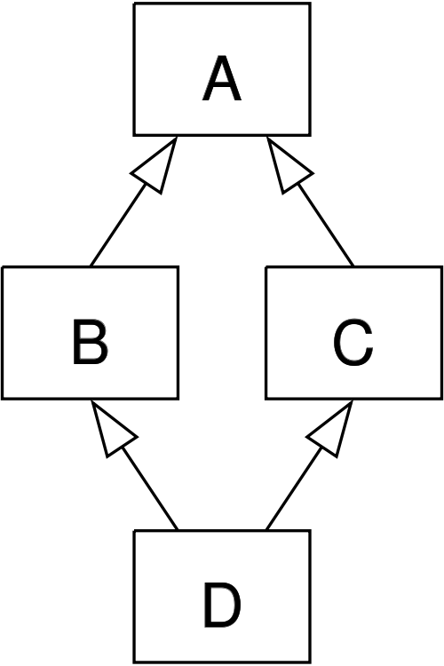

October 15, 2013
Joseph Sheedy
joseph.sheedy@gmail.com
Git repository: https://github.com/UWPCE-PythonCert/Python300-SystemDevelopmentWithPython
A coroutine is the generalization of a subroutine.
In a subroutine, data enters the top, and is returned transformed.
In a coroutine, multiple entry and points may exist
A generator is a function which contains call(s) to the keyword yield.
When this is hit in a function definition, an iterator object is returned, which has the required definitions for __iter__ and next()
def count_to_N(N):
for i in xrange(N):
yield i+1
print sum(count_to_N(100))
yield can output values, but it can also take in values
Via the generator method send()
If a yield statement is on the right-hand side of an assignment (known as a yield expression), it will return the value it was sent:
x = yield 99
Before you can communicate with a coroutine you must first call next() or send(None) to advance its execution to the first yield expression, else you'll get a nice TypeError
Other methods of the generator in addition to the iterator methods are
close() - causes the generator to throw StopIteration on next next() call
throw(type, value, traceback) - causes the specified exception to
be thrown at the point where the generator g is currently suspended
http://www.python.org/dev/peps/pep-0342/
http://scipy-lectures.github.io/advanced/advanced_python/#bidirectional-communication
def coroutine(n):
try:
while True:
x = (yield n)
n += x
except GeneratorExit:
pass
targets = [
coroutine(10),
coroutine(20),
coroutine(30),
]
for target in targets:
print target.next()
for i in range(5):
for target in targets:
print target.send(i)
cd to examples/coroutines
try running python downloader.py |less
Using the generator tools we have discussed, cause the generator to exit when it reaches the word "DOCTYPE", without putting this logic in the generator itself.
Object Oriented Programming (OOP) is a programming paradigm which encapsulates data and functions together in the form of objects
Python is an evolving language. As of Python 2.2, we have old-style and new-style classes. The distinction disappears in Python 3.
New-style classes were introduced to unify user defined classes and built-in types.
This allows the extension of built-in types, for instance
class MyInt(int): pass
To make a new-style class, derive from any other new-style class, or object
class C(object):
def __init__(self):
# wham, new style class
pass
You almost always want new-style classes.
super(), for instance, doesn't work with old-style classes.
Now look for yourself the differences between new-style and old-style classes:
http://www.python.org/doc/newstyle/
http://docs.python.org/2/reference/datamodel.html
http://stackoverflow.com/questions/54867/old-style-and-new-style-classes-in-python
New Style: everything is an object, including classes
All per-object data in instance attributes is stored in __dict__
Class definition is stored in __class__
Class attributes are accessible through the instance
Reference counting, weak references, and cyclic garbage collection are handled for you
mixins are classes containing methods and properties with the intent of blending them into a new class definition.
Implemented in Python via multiple inheritance
class BaseClass(object):
x = 10
class Mixin1(object):
def method1(self):
print "called method1, x = %s" % self.x
class Mixin2(object):
def method2(self):
print "called method2, x = %s" % self.x
class MyClass(Mixin2, Mixin1, BaseClass):
pass
Order is important, of course
The order of inheritance affects the behavior of the class, so understanding method resolution order (MRO) is important
When calling a method on an object, Python first checks to see if the method name is defined in the class. If not, it climbs up the class hierarchy until it either finds it or reaches the top without locating it, which will result in an AttributeError exception being thrown.
You can explicitly call the method as defined in a parent using super().
class A(object): pass
class B(A): pass
class C(A): pass
class D(B, C):
def meth(self, arg):
super(D, self).meth(arg)

The MRO of the previous diagram is [D,B,C,A], and is defined by the C3 linearization algorithm: http://en.wikipedia.org/wiki/C3_linearization
Not so difficult for trivial examples, can lead to difficult bugs in complex hierarchies
classic classes maintain their original method resolution order, depth first and then left to right.
In C3, only the last occurance is retained
http://www.python.org/download/releases/2.2.2/descrintro/#mro, the classic description of modern MRO by Guido.
An object is initialized after creation by the __init__ method. It can accept arguments, which are passed to the class.
class MyInt(int):
def __init__(self, d):
super(MyInt, self).__init__(d)
Unlike __init__, __new__ is a static method, not an instance method
For historical reasons, this is a static method instead of a class method
Called with the same arguments as __init__
Allows for immutable types, data is set at construction time
Can return new or existing objects, of any type
__init__ is still called once the object is stood up to initialize it
Here is a replacement for int which can only take new values between 0 and 255:
class ConstrainedInt(int):
def __new__(cls, value):
value = value % 256
self = int.__new__(cls, value)
return self
Our ConstrainedInt handles initialization for us, but doesn't handle modification of the value
Develop ConstrainedInt until it passes all tests in test_constrainedint.py
class ConstrainedInt(int):
"""keeps value between 0 and 255"""
def __new__(cls, value):
value = value % 255
self = int.__new__(cls, value)
return self
They all start with and end with '__', and do things like support operators and comparisons, and provide handlers for the object lifecycle.
Also, __call__, __str__, __repr__, __sizeof__, __setattr__, __getattr__, __len__, __iter__, __contains__, __lshift__, __rshift__, __xor__, __div__, __enter__, __exit__, and my personal favorite __rxor__(self,other)......
The list is really long, it's mostly important to get a flavor of how they are used in Python so you can find and implement the right one when you need it. See http://www.rafekettler.com/magicmethods.html for more
Class methods receive the class as the first argument, not the instance. This means it doesn't have access to instance variables.
class MyClass(object):
@classmethod
def hello_class(cls):
print "hello from class %s" % str(cls)
def hello_instance(self):
print "hello from instance %s" % str(self)
MyClass.hello_class()
c = MyClass()
c.hello_class()
c.hello_instance()
A property is like a field with extra behavior defined behind the walls of the class
class BankAccount(object):
def __init__(self, account_number):
# note that the actual field value is "hidden"
self._balance = 0.0
self.account_number = account_number
@property
def balance(self):
"""getter"""
return self._balance
@balance.setter
def balance(self, value):
# record this transaction
print "set the value of account %(account_number)s to %(value)f" % \
{'account_number': self.account_number, 'value': value}
self._balance = value
The expression "a + b" is "just" a shorthand for add(a, b)
Or, if a is an object, for a.add(b)
But since people might actually want to use the name add, Python spells this method __add__
2 + x does not always equal x + 2
Classes can define right-hand versions of operators, e.g., __radd__ instead of __add__
If the object on the left has an __add__ method, call that
Otherwise, if the object on the right has an __radd__ method, call that
Otherwise, try Python's built-ins
If an object is asked about an attribute which can't be found through the usual means, __getattr__(self, name) is called
By default, __getattr__ will raise an AttributeError
There is also __setattr__(self, name, value). What is its' default behavior?
Create a class which returns None for any attributes which haven't been defined
f = Foo()
assert None==f.x
Omits __dict__ for instances
Reduces memory use
Allows for immutable classes
class TinyAndImmutable(object):
__slots__ = ['value']
def __init__(self, value):
self.value = 1
x = TinyAndImmutable(4)
The class of Class is a metaclass
a metaclass can be used to dynamically create a class
the metaclass, being a class, has a metaclass
The base metaclass is type
type? Type: type String Form:Namespace: Python builtin Docstring: type(object) -> the object's type type(name, bases, dict) -> a new type
So what type is type?
Hold on...
type(type) Out[1]: type
With one argument, type() returns the type of the argument
With 3 arguments, type() returns a new class
type(name of the class,
tuple of the parent class (for inheritance, can be empty),
dictionary containing attributes names and values)
using the class keyword is more syntactic sugar, we can get by without it
class MyClass(object):
x = 1
OR
MyClass = type('MyClass', (), {'x': 1})
Just define a function with the correct signature and add it to the attr dictionary
def my_method(self):
print "called my_method, x = %s" % self.x
MyClass = type('MyClass',(), {'x': 1, 'my_method': my_method})
o = MyClass()
o.my_method()
Consider wanting a metaclass which mangles all attribute names to provide uppercase and lower case attributes
class Foo(object):
__metaclass__ = NameMangler
x = 1
f = Foo()
print f.X
print f.x
class NameMangler(type):
def __new__(cls, clsname, bases, dct):
uppercase_attr = {}
for name, val in dct.items():
if not name.startswith('__'):
uppercase_attr[name.upper()] = val
uppercase_attr[name] = val
else:
uppercase_attr[name] = val
return super(NameMangler, cls).__new__(cls, clsname, bases, uppercase_attr)
class Foo(object):
__metaclass__ = NameMangler
x = 1
/
#